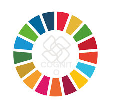
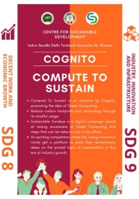
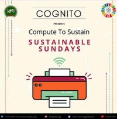
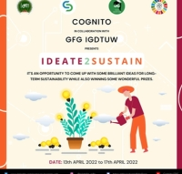
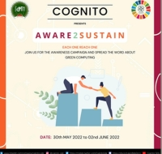

|
|
.png)
|
Introducing CSDIGDTUW has taken diverse initiatives setting international benchmarks not only in the academic domain but also in addressing pressing issues of society. The University has made an impact at the individual, family and community levels. The university has launched highly successful social outreach initiatives through the Centre for Sustainable Development aimed at working towards the United Nations Sustainable Development Goals. Six teams, working under CSD, cover 11 different SDG Goals. All the teams have launched comprehensive campaigns about pressing issues related to the SDGs and have disseminated knowledge to more than a thousand students at large. Our objective to create social leaders that are sensitive towards the preservation of the environment have in turn, sensitized the general public too, and the team’s tremendous accomplishments have brought in results. I’m sure that the endeavours of our students will reach out to the readers of this newsletter and bring about a transformation in the way that they perceive their lives and the lives of others. I wish all the best to the CSD team! CENTER FOR SUSTAINABLE DEVELOPMENTA unifying framework for peace and prosperity for people and the planet, both now and in the future, is provided by the 2030 Agenda for Sustainable Development, which was accepted by all United Nations Member States in 2015. The 17 Sustainable Development Goals (SDGs), which are an urgent call to action for all nations—developed and developing—in a global partnership, are at the centre of it. A unifying framework for peace and prosperity for people and the planet, both now and in the future, is provided by the 2030 Agenda for Sustainable Development, which was accepted by all United Nations Member States in 2015. The 17 Sustainable Development Goals (SDGs), which are an urgent call to action for all nations—developed and developing—in a global partnership, are at the centre of it.CSD is a completely student driven Youth Initiative creating Social Ambassadors of Change. |
COGNITOCognito, working on SDG 8 and 9, stands for fostering innovation, promoting inclusive economic growth and developing a versatile infrastructure for our own generation's good. |
PHASE 1
|
PHASE 2
|
CAMPAIGN BY COGNITOC O M P U T E T O S U S T A I N 
The initiative of 'Sustainable Sundays' was launched by Cognito wherein posts were released on the social media handles every Sunday to shed some light on the ways to reduce carbon footprints by adopting Green Computing methods. Some of the topics we covered were E-waste, Shutting down computer every night etc. 
Ideate2Sustain was organised by Cognito in collaboration with GeeksforGeeks Student Chapter IGDTUW on April 17, 2022. The ideathon was a team competition based on the 17 UN Sustainable Development Goals where participants were required to ideate a solution towards realizing these goals. The goal of this event was to raise awareness about Green Computing among people who work with technologies and related devices on a daily basis. It was intended to educate people on how proper use of their electronic devices may benefit Mother Nature 

|
PARTICIPATION IN EVENTS |
|
.jpg)